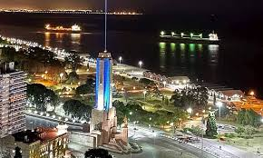
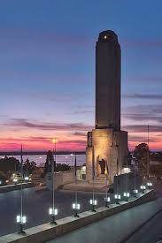

Monumento a la Bandera
Este monumento patrio argentino marca el lugar donde Manuel Belgrano creó la bandera nacional.

La Ciudad
Rosario es la cuna de la bandera y un destino ideal para el verano, gracias a la gran extensión del río Paraná y sus playas de arena fina.

La Capital
Ciudad que nunca duerme, exponente de arte e historia, imperdible en cualquier visita a Argentina.

Puente Rosario-Victoria
Símbolo del crecimiento turístico y de la conexión de Rosario con el resto del país.

El Río Paraná
El río Paraná es fuente de riqueza portuaria y turística; nace en Brasil y es uno de los más importantes de Sudamérica.
Ciudad Icónica
Rosario es una ciudad destacada por su arte y cultura; numerosos artistas, escritores, escultores y músicos son rosarinos.